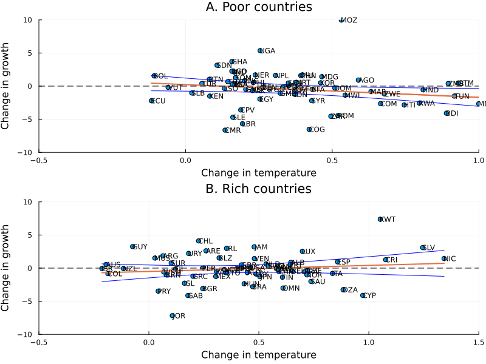

Functions for Figure 2
This page contains the functions used to generate Figure 2 of Dell (2012). The function figure2_visualize is generates both plots and combines them in one. The only extra function we use for this part is HCE which is a way to obtain robust standard errors without using any precompiled packages.

Missing docstring for figure2_visualize. Check Documenter's build log for details.
DellReplicate.HCE — FunctionHCE(df::DataFrames.DataFrame, y::String, x::String)HCE computes the predicted values and the robust standard errors from a DataFrame, the dependent variable and the regressor. It returns three objects coefficient_se, y_hat, se_fit. Note that this function can easily be extended to multiple regression.